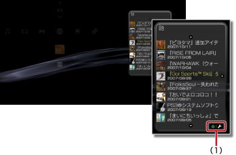
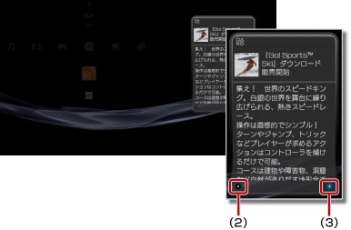

ネットワーク > インフォメーションボードを使う
インフォメーションボードを使う
インフォメーションボードは、XMB™に常に表示され、ゲームの最新ニュースやPlayStation®Storeの情報などニュースの見出しを表示します。
ヒント
- ニュースを表示するには、PS3™がインターネットに接続できる状態になっている必要があります。ネットワーク設定について詳しくは、
 （設定）＞
（設定）＞ （ネットワーク設定）＞［インターネット接続設定］をご覧ください。
（ネットワーク設定）＞［インターネット接続設定］をご覧ください。 - インフォメーションボードの表示位置や文字サイズを変えることはできません。
- インフォメーションボードのデザインは、不定期に変更になる場合があります。また、国や地域によっても異なる場合があります。
ニュースの詳細を表示する
1. |

|
||||
|---|---|---|---|---|---|
2. |
詳細を表示したいニュースの見出しを選び、方向キー 
|
 を押す。
を押す。 でリストに戻ります。
でリストに戻ります。 （インターネットブラウザ）が起動し、Webサイトを表示します。Webサイトへのリンクがないニュースでは表示されません。
（インターネットブラウザ）が起動し、Webサイトを表示します。Webサイトへのリンクがないニュースでは表示されません。インフォメーションボードを非表示にする
 （ネットワーク）から（インフォメーションボード）を選んで
（ネットワーク）から（インフォメーションボード）を選んで ボタンを押し、オプションメニューで［表示しない］を選びます。
ボタンを押し、オプションメニューで［表示しない］を選びます。
ヒント
インフォメーションボードを再び表示するときは、もう1度アイコンを選んでボタンを押し、オプションメニューで［表示する］を選びます。